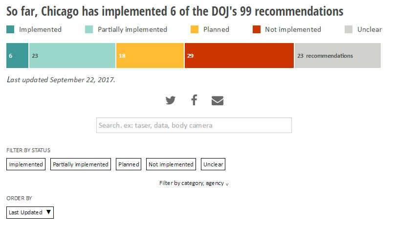
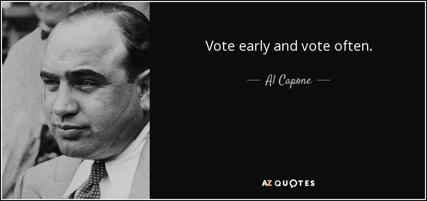
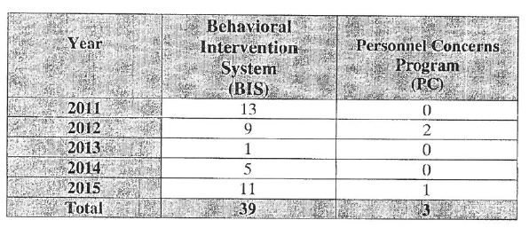

Tips for Investigative Reporting
Jonah Newman | Injustice Watch
jonahnewman.com/talks/investigative-reporting-tips
Example #1: Settling for Misconduct
Example: Police Reform Tracker
Lesson #1: Don't give up

Lesson #2: Know your beat
Lesson #3: Get in a data frame of mind
Lesson #4: It's not a story if there's no narrative
Lesson #5: If the data don't exist, find another way
Lesson #6: Look for solutions
Example: Concordia Place
Lesson #7: Go to community meetings
Lesson #8 Ask sources for documents, emails, texts
Lesson #9: Look for lawsuits


Lesson #10: FOIA early and often

Fight back if you don't get what you ask for.
Know the FOIA law.
Other FOIA Tips
Be patient, but persistent
Sometimes it helps to pick up the phone
It is important to ask in the right way
"Records sufficient to show the number of sworn personnel who were placed into the Behavioral Intervention System and Personnel Concerns programs, by year, from 2011 to 2015 (to date)."
"Names and badge numbers of all officers enrolled in the Behavioral Intervention System and Personnel Concerns programs"